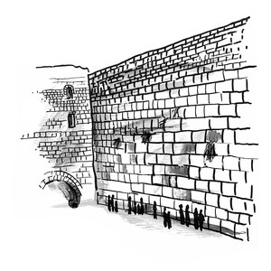

בס"ד
שבת קודש...
--:--
הדלקת נרות שבת
--:--
צאת השבת
ערב שבת
--:--
מנחה, קבלת שבת וערבית

שבת קודש
7:45
שחרית ומוסף
9:15
תפילת ילדים
15:00
לימוד בספר "אורות"
15:45
מנחה של שבת
--:--
ערבית של מוצאי שבת